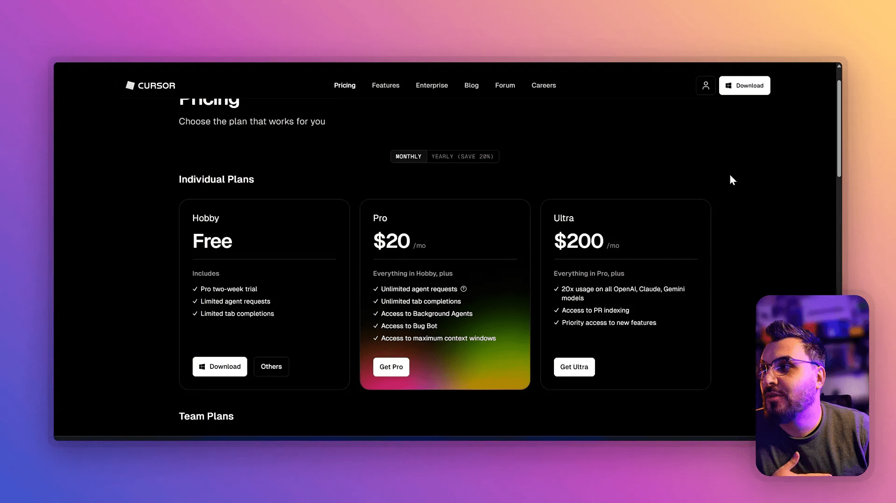
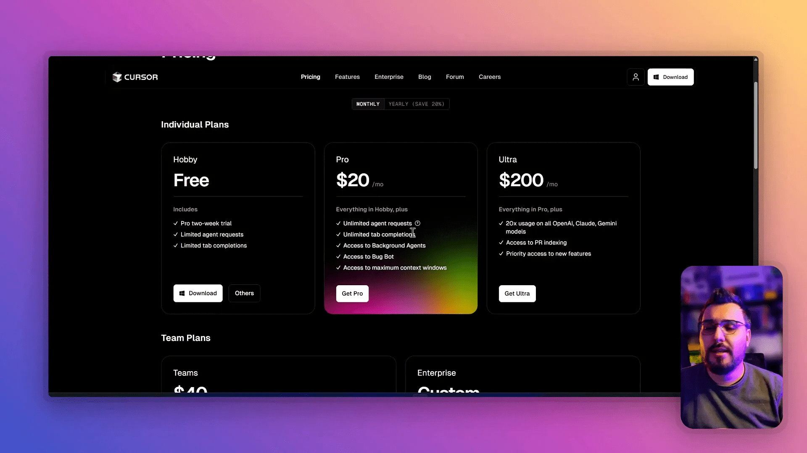
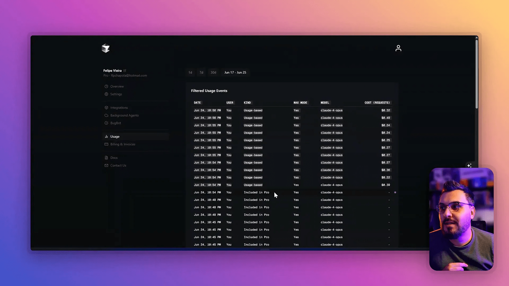
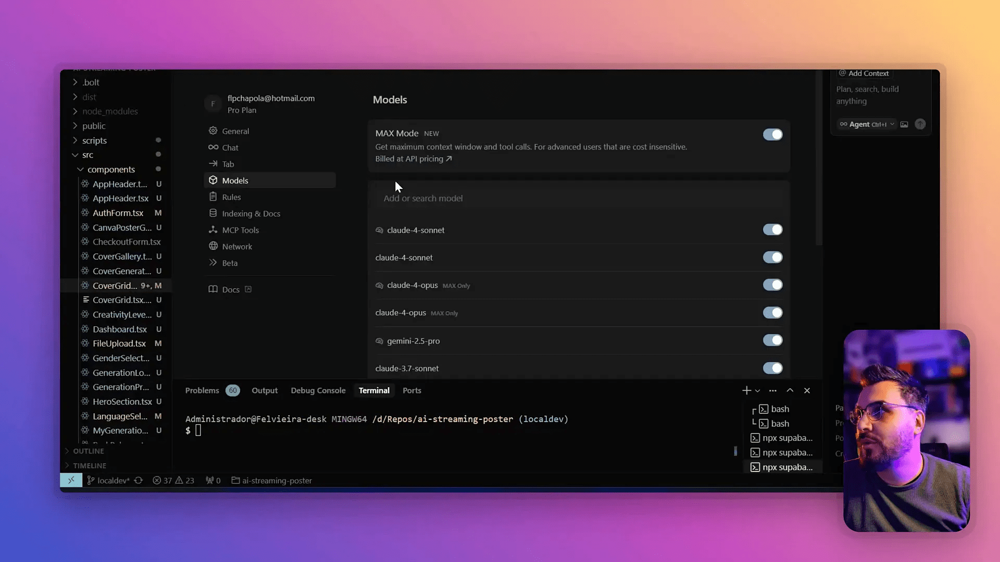

Se você é desenvolvedor front-end ou trabalha com programação há algum tempo, provavelmente já ouviu falar do Cursor — uma ferramenta que vem ganhando destaque no universo do desenvolvimento assistido por IA. Sou Felipe DEV, com mais de seis anos de experiência na área, e hoje vou compartilhar com vocês uma análise detalhada das recentes atualizações do Cursor, especialmente sobre o tão comentado “MaxMode” gratuito. Vamos desvendar o que realmente mudou, o que você pode esperar de uso sem custo adicional, e quais cuidados você deve ter para não ser surpreendido por cobranças inesperadas.
Além disso, vou contextualizar essas novidades com outras ferramentas que uso no dia a dia, como Bolt, Lovable, Replit e outras IAs que fazem parte do meu fluxo de trabalho. Se você quer entender a fundo como tirar o máximo proveito do Cursor e evitar desinformações, este conteúdo é para você.

Índice
- 🔍 Entendendo as atualizações do Cursor: o que é o MaxMode e por que ele importa?
- 💸 O modelo de negócio do Cursor e o impacto no uso do MaxMode
- ⚙️ Como funciona o MaxMode na prática? Testes e limitações
- 🧠 Comparando o Cursor com outras IAs: Gemini e Claude
- 📈 Dicas práticas para usar o MaxMode no Cursor sem surpresas
- 🤝 Conclusão: o que realmente mudou no Cursor e como aproveitar
- ❓ FAQ – Perguntas frequentes sobre o MaxMode no Cursor
🔍 Entendendo as atualizações do Cursor: o que é o MaxMode e por que ele importa?
Recentemente, o Cursor anunciou algumas mudanças que geraram um certo burburinho na comunidade de desenvolvedores. Dentre elas, a mais comentada foi a liberação do MaxMode — um recurso que amplia a janela de contexto da IA, permitindo que ela processe mais informações de uma só vez, o que teoricamente melhora a qualidade das sugestões e respostas, especialmente em projetos grandes.
Mas o que exatamente é essa “janela de contexto” e por que ela é tão importante?
O que é janela de contexto?
A janela de contexto é a quantidade de texto, código ou informações que um modelo de linguagem consegue analisar simultaneamente para gerar respostas ou completar tarefas. Quanto maior essa janela, mais contexto o modelo tem para entender o que você está pedindo, evitando erros como duplicação de arquivos, sugestões desconexas ou até “alucinações” — o termo usado para quando a IA inventa informações ou códigos que não fazem sentido.
No Cursor, o MaxMode aumenta essa janela de contexto, permitindo que você envie mais arquivos e tenha um contexto maior para o assistente trabalhar. Isso é especialmente útil quando você está lidando com projetos complexos, com vários arquivos e dependências interligadas.

Por que o MaxMode era pago e o que mudou?
Historicamente, o MaxMode era um recurso pago no Cursor. Você podia ativá-lo e definir um limite de gasto mensal, já que ele consumia mais recursos computacionais e, consequentemente, gerava custos maiores para a empresa. Por isso, quem não ativava o MaxMode acabava tendo uma experiência limitada, com a IA “picotando” os arquivos e trabalhando com menos contexto, o que comprometia a qualidade do código gerado.
Com a nova atualização, o Cursor liberou o MaxMode gratuitamente para todos os usuários, o que gerou um alvoroço na comunidade. Muitos começaram a dizer que agora o Cursor é “ilimitado” e que ninguém mais ganha dele, já que todo mundo pode usar o contexto máximo sem pagar nada a mais.
No entanto, essa liberação gratuita não é tão simples assim. Apesar do acesso liberado, ainda existem limites de uso que a empresa impõe para controlar custos, principalmente para os modelos mais robustos, como o Cloud Opus. Além disso, o plano de negócio do Cursor ainda depende do investimento dos seus investidores para manter essa qualidade de serviço acessível para todos.
💸 O modelo de negócio do Cursor e o impacto no uso do MaxMode
O Cursor cobra atualmente um valor mensal de cerca de 20 dólares, um preço bastante acessível para quem usa a ferramenta regularmente. Porém, esse valor não cobre integralmente o custo do serviço, principalmente porque a empresa ainda está em fase de crescimento e utilização dos recursos financeiros dos investidores para bancar a infraestrutura.
“Então não é a sua grana que está custeando você usar, é o próprio grande investidor pra crescer a base de usuários do deles né, quando estiver bem grande e tudo mais eles pivotam o modelo de negócio pra valores maiores.” — Felipe DEV
Isso quer dizer que, no futuro, é provável que o Cursor ajuste seu modelo de negócio para cobrar mais pelo uso intensivo, especialmente do MaxMode, que consome mais recursos.

Para manter os custos baixos para os usuários, o Cursor, até então, não ativava o MaxMode por padrão para todos. Isso fazia com que a janela de contexto fosse limitada, e a IA acabasse “alucinando” mais, fragmentando os arquivos ao invés de compreendê-los como um todo.
⚙️ Como funciona o MaxMode na prática? Testes e limitações
Para entender melhor essas mudanças, fiz vários testes usando o Cloud 4 Opus, uma das versões mais robustas do Cursor, com o MaxMode ativado. O resultado foi curioso e vale a pena compartilhar:
- O MaxMode está incluso no plano, sem custo adicional imediato.
- Você pode usar a janela de contexto maior para enviar vários arquivos e obter respostas mais precisas.
- Apesar de não ser cobrado no momento, existe um limite de requisições — para o Cloud Opus, esse limite parece ser em torno de mil requisições.
- Quando esse limite é atingido, o Cursor começa a cobrar, mas não avisa previamente, o que pode pegar o usuário de surpresa.
- É possível definir limites de gasto para evitar cobranças inesperadas.

Fique atento: o MaxMode continua liberado, mas o uso das LLMs (modelos de linguagem) premium tem limites, principalmente para os modelos mais potentes. A versão Cloud 4 Opus, por exemplo, já possui esse limite, enquanto outras versões podem variar.
Por isso, sempre é bom monitorar seu uso e definir limites de gastos para evitar surpresas na fatura.
🧠 Comparando o Cursor com outras IAs: Gemini e Claude
Apesar das melhorias no MaxMode, o Cursor não é a única ferramenta com janela de contexto ampliada no mercado. Outras IAs, como Gemini e Claude, também se destacam por oferecer janelas de contexto muito maiores, chegando a 200 mil tokens, o que é excelente para revisão de projetos grandes, explicação de códigos complexos e documentação.
Minha recomendação pessoal para diferentes usos é:
Turbine seu Desenvolvimento com Prompts!
Você já sonhou em criar seu próprio aplicativo mas pensou que precisaria ser um gênio da programação? Chegou a hora de transformar esse sonho em realidade! Com as ferramentas no-code de hoje, você pode criar aplicativos profissionais sem escrever uma única linha de código.
- Geminize: ideal para análise de projetos extensos, revisão detalhada e geração de documentação, graças à sua enorme janela de contexto.
- Cloud 4 Opus (Cursor): ótimo para tarefas até três ou cinco arquivos, onde a assertividade e qualidade do código são essenciais.
- Claude 4 Sone: pode ser usado como alternativa quando o limite do Cloud Opus é atingido.
Cada ferramenta tem seu ponto forte, e o importante é saber quando e como usar cada uma para otimizar seu fluxo de trabalho.
📈 Dicas práticas para usar o MaxMode no Cursor sem surpresas
Se você quer aproveitar o MaxMode gratuito do Cursor, aqui vão algumas dicas importantes para garantir uma boa experiência sem gastar mais do que o esperado:
- Ative o MaxMode nas configurações: vá em Geral e ative o MaxMode para ter acesso à janela de contexto ampliada.
- Monitore seu uso: acompanhe o número de requisições e o consumo financeiro dentro da plataforma para evitar cobranças inesperadas.
- Defina limites de gasto: configure um teto de gasto mensal para que o sistema bloqueie o uso ao atingir o valor definido.
- Use modelos alternativos se necessário: caso atinja o limite do Cloud Opus, migre para outras LLMs como Claude 4 Sone.
- Use o MaxMode quando fizer sentido: para projetos grandes, o MaxMode faz toda a diferença. Para tarefas menores, você pode economizar desativando-o.

🤝 Conclusão: o que realmente mudou no Cursor e como aproveitar
O MaxMode gratuito no Cursor é, sem dúvida, uma atualização interessante que traz uma janela de contexto maior sem custo imediato para o usuário. Isso melhora a experiência e a qualidade do código gerado, principalmente em projetos com múltiplos arquivos.
Porém, não se deixe enganar por promessas de “uso ilimitado” sem custos. Existe sim um limite de uso, especialmente para os modelos mais avançados, e o modelo de negócio do Cursor ainda está em evolução, apoiado por investidores que subsidiam o serviço para crescer a base de usuários.
Se você trabalha com desenvolvimento front-end, usando ferramentas como vibecoding cursor bolt lovable replit ai, essas atualizações podem ser muito úteis, mas é fundamental usar com consciência, monitorar o consumo e combinar o Cursor com outras IAs, como Gemini e Claude, para maximizar sua produtividade sem estourar o orçamento.
Espero que essas informações tenham ajudado você a entender melhor as mudanças no Cursor e como tirar o máximo proveito do MaxMode gratuito. Se gostou do conteúdo, compartilhe com seus amigos que também usam o Cursor e que precisam saber dessas dicas importantes.
❓ FAQ – Perguntas frequentes sobre o MaxMode no Cursor
O que é o MaxMode no Cursor?
O MaxMode é uma configuração que amplia a janela de contexto da IA, permitindo que ela processe mais arquivos e informações simultaneamente, melhorando a qualidade das respostas e sugestões de código.
O MaxMode agora é gratuito para todos?
Sim, o Cursor liberou o MaxMode gratuitamente para todos os usuários, mas ainda há limites de uso que podem gerar cobranças se ultrapassados, especialmente para modelos premium como o Cloud Opus.
Como evitar cobranças inesperadas ao usar o MaxMode?
Recomendo definir limites de gasto na plataforma, monitorar o uso de requisições e alternar entre diferentes modelos de IA caso atinja o limite de um deles.
Qual a diferença entre o Cursor e outras IAs como Gemini e Claude?
O Cursor é muito eficiente para projetos pequenos a médios, com alta assertividade. Gemini e Claude possuem janelas de contexto muito maiores, ideais para revisão e explicação de projetos grandes.
Vale a pena usar o MaxMode sempre ativado?
Não necessariamente. Use o MaxMode quando trabalhar com projetos grandes que precisam de mais contexto. Para tarefas simples, pode economizar recursos desativando-o.
Posso usar o MaxMode junto com outras ferramentas como Bolt, Lovable e Replit?
Sim! Essas ferramentas complementam seu fluxo de trabalho e podem ser usadas em conjunto para maximizar sua produtividade e eficiência no desenvolvimento assistido por IA.
Como posso aprender mais sobre o Cursor e outras ferramentas de IA para desenvolvimento?
Considere seguir canais especializados, participar de comunidades, e conferir cursos e conteúdos produzidos por desenvolvedores experientes para aprofundar seu conhecimento.
Se quiser ficar por dentro de mais novidades, dicas e análises sobre ferramentas de desenvolvimento e IA, não deixe de acompanhar o canal do Felipe DEV e explorar conteúdos exclusivos para membros.
Este artigo é baseado no meu video MAXMODE GRÁTIS no Cursor! O que mudaram e até onde dá pra usar sem pagar a mais? pra mais detalhes vejam direto no youtube.